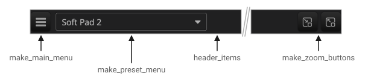
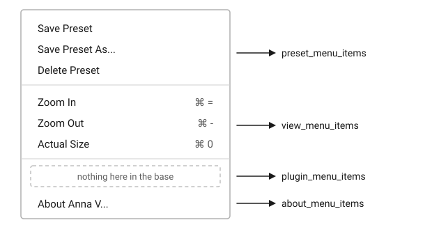

The Header
Overview
The header is the row along the top of a plugin’s editor: a main menu at the left, the preset the plugin is on beside it, and at the right the zoom buttons and a logo, if there is one. It is the same in every plugin unless a plugin changes it, so someone who knows where the presets and the zoom are in one QPlug plugin knows where they are in the next.
Everything on it works through the controller, so a plugin wires nothing.
The presenter calls make_header from on_attach and puts what it
returns at the top of its content, as the anna_5 example does:
view_.content(
fixed_size({920, 568},
margin({10, 10, 10, 10},
vtile(
hold(make_header()),
...
)
)
),
box(bkd_color)
);
make_header builds the row by calling make_main_menu,
make_preset_menu, header_items, make_zoom_buttons and logo, in that
order, which is the row from left to right. Overriding one of them changes
that one place and leaves the rest standing.
make_preset_menu needs the view, which is why the header is made
from on_attach and not from the presenter’s constructor.
|
The Main Menu
The main menu is the icon button at the left. It is built a section at a time, in the order below, with a spacer after each section that has anything in it and none after the last.

Save Preset writes the state under the name already shown, and clears the
edited mark. It is enabled only while that name is the user’s own to write
over, not a factory preset and not a blank name, and while something has
moved since. Unedited, there is nothing to write, so the item follows the
* beside the name: both show whether anything has moved.
Save Preset As opens a dialog with the preset shown already in the field. The state is written to the user’s preset file under that name, and the header shows it. A name the plugin ships is refused, with an alert saying so: those names are the plugin’s, and a factory sound the user has changed takes a name of their own. An empty name, or a file that cannot be written, leaves everything as it was.
Delete Preset is enabled only while the preset shown is the user’s own to remove: not a factory preset, and not a blank name. Deleting it clears the name in the header.
Zoom In, Zoom Out and Actual Size carry the shortcuts the presenter takes in every plugin: the action key, Command on macOS and Control elsewhere, with plus, minus and zero. The zoom page covers the stops they walk and where the scale is kept.
About opens a message box with the plugin’s name, its version and its
vendor, as info() gives them.
The Preset Menu
The button beside the main menu shows the preset the plugin is on, with a
leading * while it is edited. The name is read from the controller as the
button is drawn, so any refresh shows the right one: a preset loaded,
saved, deleted, or a parameter moved from the panel or from the host. Every
parameter model is watched for that last case, and the button redrawn when
one of them moves.
The list is built afresh each time the menu opens, so it is never stale: a preset saved a moment ago is in it, and one deleted is gone. Each line carries the name, and at the right whose preset it is, factory or user. Past twelve presets the list scrolls rather than grows, at six tenths of the editor’s height.
The Zoom Buttons and the Logo
Two icon buttons at the right do what Zoom Out and Zoom In do in the View menu. Expand sits outermost, nearest the edge the window grows towards.
logo returns null in the base. A plugin that overrides it gets its
element at the far end of the row, past the zoom buttons.
Customizing the Header
A plugin overrides the virtual for the place it changes. Adding to a section means calling the base first and pushing onto what it left; replacing a section means not calling the base at all.
The example below puts power and bypass toggles on the row, and adds
Revert and Configuration to the main menu. header_items and
plugin_menu_items are the two the base leaves empty, so neither override
calls it.
class my_presenter : public q_plug::presenter
{
public:
my_presenter(my_controller& ctl);
protected:
void on_attach(elements::view& view_) override;
void header_items(row& items) override;
void plugin_menu_items(menu& items) override;
};A toggle binds like any other control, and the click is one edit:
void my_presenter::header_items(row& items)
{
auto const& params = ctrl().parameters();
auto power = share(toggle_icon_button(icons::power, 1.2f));
auto bypass = share(toggle_icon_button(icons::block, 1.2f));
bind(my_controller::power_id, power, params[my_controller::power_id]);
bind(my_controller::bypass_id, bypass, params[my_controller::bypass_id]);
items.push_back(share(hspace(12)));
items.push_back(share(align_middle(hold(power))));
items.push_back(share(hspace(4)));
items.push_back(share(align_middle(hold(bypass))));
}The items are pushed in the order they are to appear, and the spaces between them are elements of their own. What goes in here lands between the preset menu and the zoom buttons.
Revert loads the preset shown again, throwing away the edits made since. There is nothing to go back to until a preset is loaded, and nothing to do until it is edited, so the item defines when it is enabled:
void my_presenter::plugin_menu_items(menu& items)
{
auto revert = menu_item("Revert");
auto config = menu_item("Configuration...");
revert.is_enabled =
[this]()
{
return !ctrl().preset_name().empty() && ctrl().preset_edited();
};
revert.on_click =
[this]()
{
ctrl().load_preset(ctrl().preset_name());
if (auto v = view())
v->refresh();
};
config.on_click = [this]() { /* open a dialog of the plugin's own */ };
items.push_back(share(std::move(revert)));
items.push_back(share(std::move(config)));
}load_preset brings the parameters back and sends them to the host, and
names the preset again, which clears the edited mark. The refresh is what
redraws the header with it.
Declaration
The part of presenter that builds the header:
class presenter
{
public:
using element_ptr = elements::element_ptr;
protected:
virtual element_ptr make_header();
virtual element_ptr make_main_menu();
virtual element_ptr make_preset_menu();
virtual element_ptr make_zoom_buttons();
virtual element_ptr logo() { return nullptr; }
using row = std::vector<element_ptr>;
virtual void header_items(row& items) {}
using menu = std::vector<element_ptr>;
virtual void preset_menu_items(menu& items);
virtual void view_menu_items(menu& items);
virtual void plugin_menu_items(menu& items) {}
virtual void about_menu_items(menu& items);
};Expressions
The Row
| Expression | Semantics | Return Type |
|---|---|---|
|
The header row. Call it from
|
|
|
The menu button at the left and everything under it. |
|
|
The preset the plugin is on, and the list it drops. |
|
|
Add to the row, between the preset menu and the zoom buttons. Empty in the base. |
|
|
The two buttons at the right. |
|
|
An element for the far right. Null in the base. |
|
The Main Menu
| Expression | Semantics |
|---|---|
|
Save Preset, Save Preset As and Delete Preset. |
|
Zoom In, Zoom Out and Actual Size. |
|
The plugin’s own. Empty in the base. |
|
About, naming the plugin. |
Each returns void and takes a menu& to push onto.